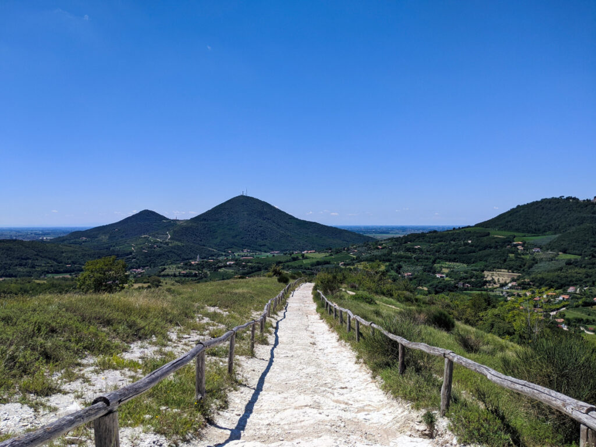
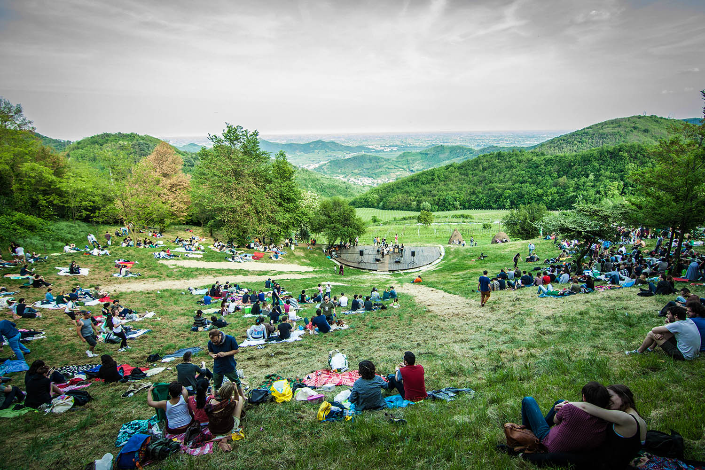
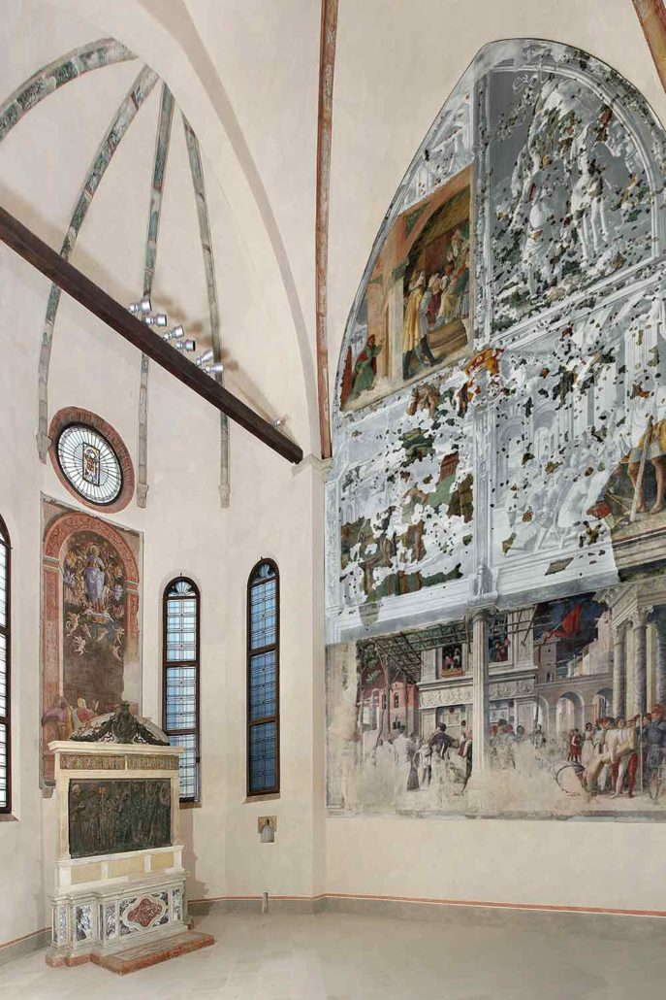
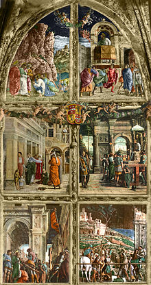
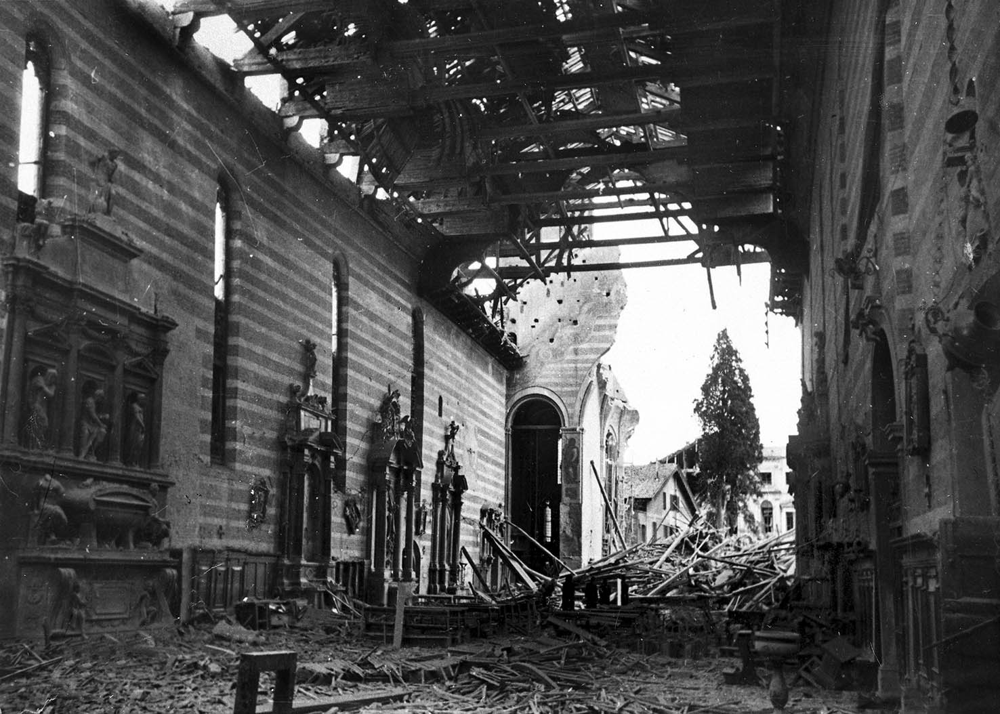
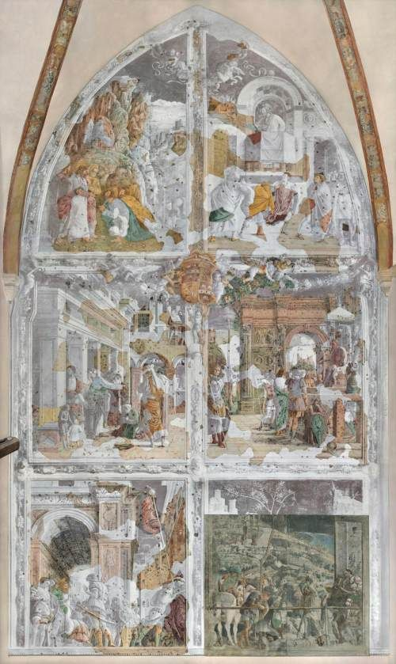

I COLLI EUGANEI
Circa 43 milioni di anni fa si è assistito ad un primo ciclo eruttivo: il magma fuoriuscito dalla crosta marina ha dato origine alle rocce basaltiche che si possono osservare nei pressi di Teolo e sul monte Gemola. Dopo un lungo periodo di inattività avvenne una seconda fase eruttiva tra i 33 e i 30 milioni di anni fa e a differenza della prima, il magma era più acido e viscoso. La bellezza di questi paesaggi collinari vennero descritti nel romanzo epistolare “Le ultime lettere di Jacopo Ortis” di Ugo Foscolo, di seguito sono riportati alcuni estratti dell’opera:
20 novembre
“Sei o sette giorni addietro s’ è ito in pellegrinaggio. Io ho veduto la natura più bella che mai. Teresa, suo padre, Odoardo, la piccola Isabellina ed io siamo andati a visitare la casa del Petrarca in Arquà. Arquà è discosto, come tu sai, quattro miglia dalla mia casa ; ma per più accorciare il cammino prendemmo la via dell’ erta.
S’apriva appena il più bel giorno d’ autunno. Parea che la notte seguita dalle tenebre e dalle stelle fuggisse dal sole, che uscia nel suo immenso splendore dalle nubi d’oriente, quasi dominatore dell’ universo ; e l’universosorridea.


Le nuvole dorate e dipinte a mille colori salivano su la volta del cielo che tutto sereno mostrava quasi di schiudersi per diffondere sovra i mortali le cure della divinità.
Io salutava a ogni passo la famiglia de’ fiori e dell’ erbe che a poco a poco alzavano il capo chinato dalla brina.
Gli alberi susurrando soavemente, faceano tremolare contro la luce le gocce trasparenti della rugiada; mentre i venti dell’aurora rasciugavano il soverchio umore alle piante.
Avresti udito una solenne armonia spandersi confusamente fra le selve, gli augelli, gli armenti, i fiumi e le fatiche degli uomini; e intanto spirava l’aria profumata delle esalazioni che la terra esultante di piacere mandava dalle valli e da’monti al sole, ministro maggiore della natura.”
LA CAPPELLA OVETARI
Collocata nel braccio destro del transetto della Chiesa degli Eremitani, la cappella è stata richiesta dal notaio Antonio Ovetari per la sua famiglia. Avendo una notevole somma di denaro, nel 1448 furono chiamati importanti artisti veneti incaricati di decorare le pareti, tra i quali Andrea Mantegna il quale completò tutto il ciclo di affreschi nel 1457.
La cappella era dedicata ai santi Giacomo e Cristoforo e infatti le loro storie sono state affrescate ai lati mentre nella parete centrale si può trovare l’affresco dell’ Assunzione della Vergine. Il resto delle decorazioni era composto da immagini sacre degli Evangelisti e di altri santi, insieme ad una pala in terracotta rivestita in bronzo rappresentante una Sacra Conversazione e realizzata da Nicolò Pizzolo, artista contemporaneo di Mantegna e che partecipò alla decorazione del luogo.


Intorno al 1880 vennero rimosse le scene del Martirio e trasporto di San Cristoforo e dell’Assunzione, poiché molto danneggiate col tempo e in seguito trasferite altrove per precauzione verso gli eventi bellici della prima metà del 1900. Sfortunatamente, l’11 marzo 1944 un bombardamento aereo distrusse quasi tutta la chiesa insieme a molti degli affreschi ma grazie ad un restauro conclusosi nel 2006 è stato possibile recuperare (per lo più in maniera frammentaria) le opere della Cappella insieme a quelle tolte in precedenza e sono state inoltre esposte immagini in bianco e nero delle opere prima dei bombardamenti.

